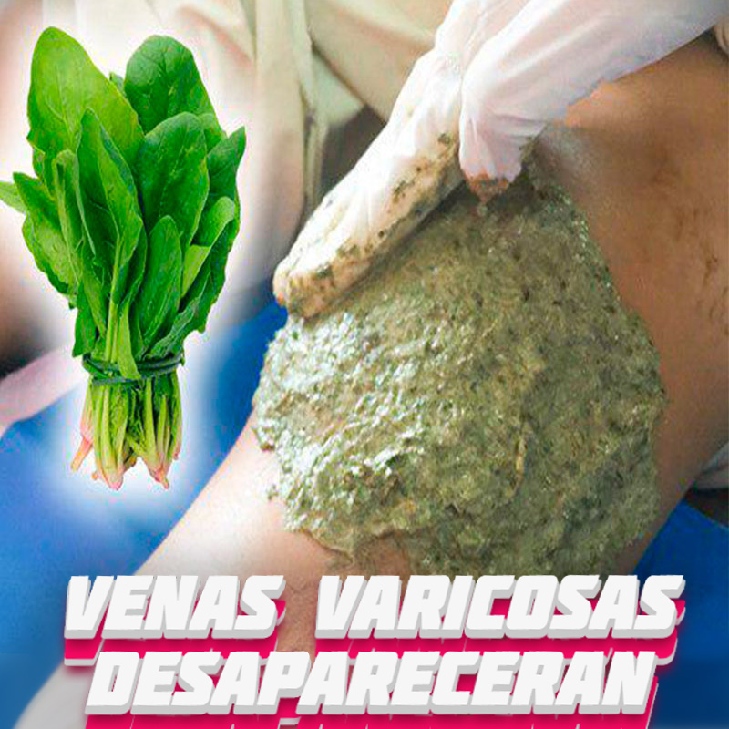

ARTRITIS REUMATOIDEA
ARTICULACIONES SANAS


Η θεματολογία του Life Blog είναι σχετική με τις προσωπικές ιστορίες των ανθρώπων και το μοίρασμα!
Η θεματολογία του Life Blog είναι σχετική με τις προσωπικές ιστορίες των ανθρώπων και το μοίρασμα!

“…the scuba diver dives to look around, the freediver dives to lookwithin…”
Umberto Pelizzari
Η παραπάνω φράση του μεγάλου ελεύθερου δύτη UmbertoPelizzari, ήταν στα χείλη μου συνεχώς όσα χρόνια ασχολούμουν με την ελεύθερη κατάδυση, αλλά τολμώ να ομολογήσω ότι αυτό συνέβαινε περισσότερο για μαγκιά παρά για την ουσία του λόγου που την αποτελεί.

Do the WriteThing… και γράψτε ότι σαν προβληματίζει, ότι σας αρέσει, ότι δεν είναι ξεκάθαρο αλλά και ότι πιστεύεται ότι ειναι, ότι ξέρετε οτι το ξέρετε και ότι θα θέλατε να γνωρίζετε αλλά γνωρίζετε ότι δεν το γνωρίζετε επαρκώς!

Las estrías son de los principales dolores de cabeza de las mujeres. En algún momento de la vida, y por causas como cambios hormonales, subidas y bajadas de peso, toca lidiar con ellas.